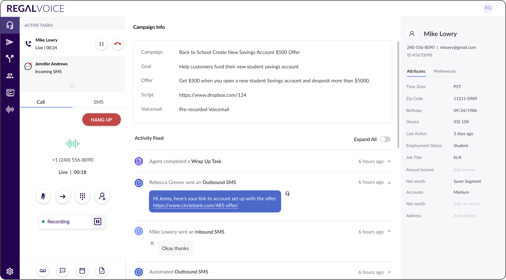

Powerful, but Not Built for Scale.
How to make Regal's platform more flexible and self-serve?
As Regal started serving more users, there was a clear signal that while the early state of Regal was powerful, it was not robust or flexible enough to accommodate the unique needs of our users:
Sales Agents
The current state (built on a third-party platform) had limited functionality so it was best suited for agents working for businesses with shorter sales cycles and high volume of leads.

Sales Leaders
The configuration of Regal's core features — data-driven automation, journey management, key CCaaS capabilities — were not exposed for self-service and fell entirely on Regal's CS team.
Takeaway
To scale, Regal needed to evolve the Agent Desktop into a flexible tool that accommodates different agent workflows — and give leaders a self-serve platform to configure and manage on their own.